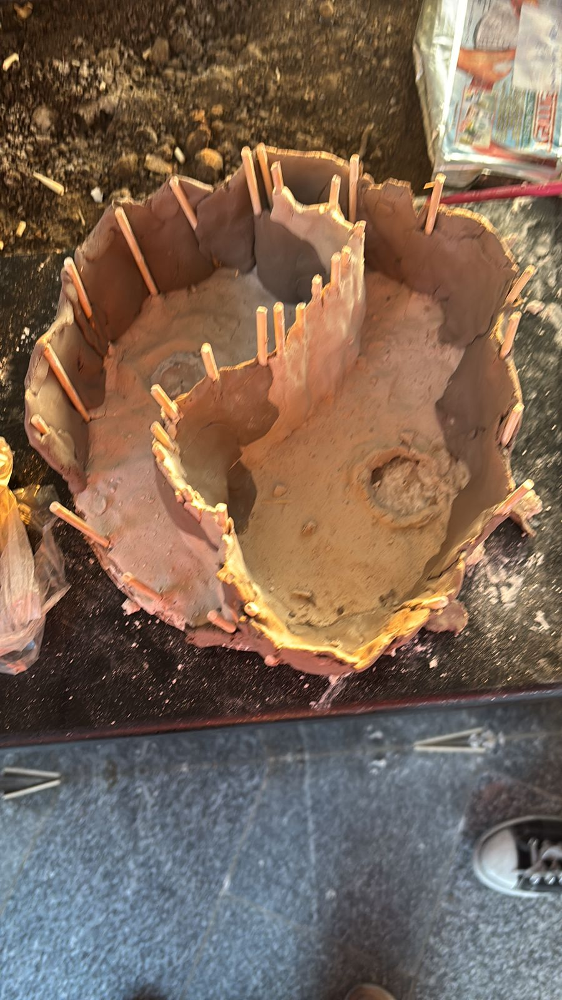
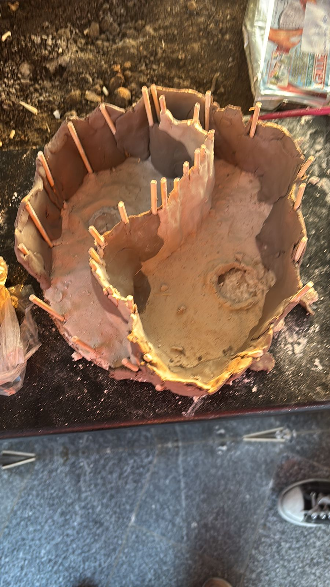

Part 01
💡 The Inspiration
"What if we could merge the ancient symbol of balance and harmony with modern mathematical precision?"
The yin-yang symbol, representing duality and interconnectedness, provided the perfect canvas for exploring complex mathematical concepts. We envisioned a pool design that wasn't just aesthetically pleasing but also mathematically rigorous.
Ancient Philosophy
Modern Mathematics
Practical Design
Dualism of opposite forces
 
